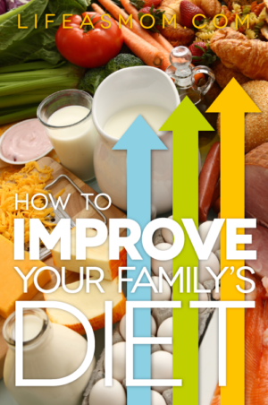

5 Simple Ways to Improve Your Diet • The Fit Cookie
 Skip to content Menu Menu Recipe Index About Contact Work with Me FAQs and Recipe Notes My Work Blog Shop Photography Etsy Shop Deals Privacy Policy Menu Recipe Index About Contact Work with Me FAQs and Recipe Notes My Work Blog Shop Photography Etsy Shop Deals Privacy Policy5 Simple Ways to Improve Your Diet
April 29, 2021 April 29, 2016 by Sarah Jane Parker
Disclosure: This post may contain affiliate links. I receive a small commission when you make a purchase using my affiliate links.
Sometimes eating better can be so complicated, the internet is full of advice! Here are 5 SIMPLE ways to improve your diet today
Hey, friends! The weather is getting a bit warmer here bit by bit (although it’s been snowing this week!) and I can’t wait for summer to get here. Spring is a time of new things, fresh beginnings, and diets. The funny thing about Spring is that most people are working on some kind of diet to get themselves ready for summer swimsuit season.
While it’s awesome to work towards your goals and get motivated by the changing seasons, eating healthy shouldn’t be a seasonal fad that comes and goes. Good nutrition should be a lifelong habit! Diets come and go but healthy eating habits can last decades if you keep practicing them.
If you’re working on losing weight or improving your health, here are my favorite ways to kickstart healthy eating habits for the long term , no diet required!
Eat until you are satisfied
This is a big one! When it comes down to eating at snacks and meal times, make sure that you aren’t stuffing yourself! Even if you are eating healthy foods, stuffing yourself on them isn’t healthy for your body and it’s hard on your digestive system.
Even if you’re not trying to lose weight, not stuffing yourself can help ease symptoms of digestive problems like IBS, GERD, and indigestion.
Whole foods first
Prioritize whole foods, and make sure the bulk of your eating is unprocessed. Swap those breakfast biscuits for a bowl of homemade oatmeal and you’ll stay fuller longer on fewer calories.
This can be tough in a fast-paced world and when you’re really busy, so this takes a lot of preparation and planning to make sure whole foods are accessible to you at different times of the day.
Here are a few prep strategies for keeping whole foods accessible even when you’re busy:
Batch or bulk cook meals on the weekends to prepare lunches and breakfasts for the busy week ahead Create freezer meals every week or a couple of times a month Cook extra food each night at dinner so there are planned leftovers for the next day or 2 (this is what I do a lot) Prepare foods by washing and cutting up fruit and vegetables for ready to eat snacks
Like the infographic? Print a copy to keep on your fridge!
Think more , not less
When people begin to think about cleaning up their eating habits, they immediately begin to think of LESS: less sugar, fewer carbs, lower calories, etc. While some of these things can be great (less sugar for example), it isn’t always great to think in those terms. When our mindset is always on “less” when it comes to food, we start to feel deprived.
The next time you need to change your eating habits, try to shift your thinking to MORE: more veggies, more whole foods, more fiber, more lean protein, etc. Since your stomach only fits so much food in it (and you should only eat till 80% full or just until satisfied anyway), adding more to your plate of things like veggies and lean protein will leave less room for foods you should be avoiding.
Balance each meal and snack
Avoid cutting out entire food groups (like carbohydrates or fats). You will have more energy throughout the day if you can balance your macronutrients and focus on getting a variety of nutrients at each meal or snack time.
If you are trying to lose weight and want to reduce your consumption of fats and starches, make sure you are still having healthy fats and carbohydrates, just in smaller servings. Balancing your calories in this way will help you stay full and reduce cravings after meals.
Balance your meals! Lean protein, complex carbohydrates and veggies or fruit, and healthy fats
Drink!
Become a drinker of water! make sure that you’re getting plenty of water each day to stay hydrated. Our bodies often mistake thirst for hunger and if you’re active your need for water is even more important. The dietary recommendation for water is drink half your weight in fluid ounces each day. If you’re 150 pounds, then aim for 75 ounces daily.
Plain water is usually just fine, but if you’re active consider adding electrolytes during or after your workouts. Avoid sugary beverages and make sure you limit your intake of artificially sweetened ones, too. The jury is still out, but some research suggests that artificial sweeteners like Splenda and aspartame can actually make you crave more sweets. It’s better to avoid chemical sweeteners to be on the safe side!
Here’s a little trick for staying hydrated:
Ok, so I’m going to try something new today. I just thought of this and maybe it will help me drink more and keep track of my water intake. ????I always have a rubber band or hair tie on my water bottle to tell which bottle is mine when everyone else in the house has one. I added more bands today, 1 for each bottle I need to drink (this bottle holds 2-1/2 cups, so that’s 10 cups). Once I drink a full bottle, I take off a band. ???? That should tell me how much water I have had and how many bottles I have to go! Now we’ll see if I can stick with it! ?????? #wellness #hydration #lifehacks
A photo posted by Sarah Jane (@thefitcookie) on Sep 3, 2015 at 6:20am PDT
Tell me: what are your favorite ways to eat healthy?
Do you have any tried-and-true tips to share?
Sarah Jane ParkerSarah Jane Parker is the founder, recipe creator, and photographer behind The Fit Cookie. She’s a food allergy mom and healthy living blogger based in Wyoming. Sarah is also an ACSM Certified Personal Trainer, ACE Certified Health Coach, Revolution Running certified running coach, and an ACE Certified Fitness Nutrition Specialist
Post navigation Four Great Reasons to Become a Personal Trainer Junking the Junk Miles: Run Faster by Running Smarter16 thoughts on “5 Simple Ways to Improve Your Diet”
Sandra Laflamme May 2, 2016 at 8:01 pmPlanned leftovers and freezer prepped meals are all things that are very important to have around. We always try to plan ahead although when life gets busy sometimes its hard : Great tips!
Reply Sarah Jane May 3, 2016 at 6:25 amThanks Sandra! One thing I forgot to mention in this post is the slow cooker that comes in handy when we have busy evenings too!
Reply jill conyers April 30, 2016 at 6:34 pmWhole foods make a big difference in health and how you feel. Healthy living is a lifestyle. Not a fad or diet. Great post Sarah.
Reply Sarah Jane May 1, 2016 at 7:24 amThanks Jill!
Reply Kelli @ Hungry Hobby April 30, 2016 at 4:50 pmSuch simple practical tips I love it! I especially love about thinking whole foods, sometimes it can be so easy to rely on those darn protein shakes or bars!
Reply Sarah Jane May 1, 2016 at 7:24 amI have to keep reminding myself of this all the time! It is way to easy for me to have bars and shakes when I should be eating whole foods
Reply Jessica @ Nutritioulicious April 29, 2016 at 10:18 pmAwesome tips and love that infographic! Focusing on what you *can* eat instead of what you can’t is so key to success.
Reply Sarah Jane May 1, 2016 at 7:23 amSwitching mindsets from “can’t” to “can” is a big one especially when people have a lot of food allergies or intolerances. It can be overwhelming but a mindset change makes a world of difference!
Reply dixya @food, pleasure, and health April 29, 2016 at 9:21 pmlove that poster you have created..people dont think of hydration as much but it makes a huge difference.
Reply Sarah Jane May 1, 2016 at 7:22 amThanks Dixya!
Reply Stephanie @ Wholesome Paradise April 29, 2016 at 1:24 pmThese are great tips. Especially the one about staying hydrated. I know that when I drink more water I’m less likely to overeat and reach for junk foods.
Reply Sarah Jane May 1, 2016 at 7:21 amMe too! For some reason drinking enough water has always been hard for me I really have to be intentional about drinking more or it doesn’t happen!
Reply Julie @ Running in a Skirt April 29, 2016 at 1:16 pmI really like all of these tips! I try to live by them as well. Eating slowly and deliberately is a big one for me.
Reply Sarah Jane May 1, 2016 at 7:21 amThat’s a great one! I think people can really pay attention to those fullness cues when they take a little time to savor their meals
Reply Christina Bauer April 29, 2016 at 12:50 pmGreat tips! Food prep is a huge one, too. It helps to know there are healthy items at home that can be transformed into a quick meal. Also, choose produce over junk food for snacks. A banana is a much better option than a cookie (or 3!).
Reply Sarah Jane May 1, 2016 at 7:17 amGreat tips! Food prep is a big one, I usually try to make bigger dinners so there are leftovers for the following day. It usually works great for us!
ReplyLeave a Comment Cancel reply
Welcome to The Fit Cookie!
Hey there! Welcome to The Fit Cookie, I’m Sarah, a personal trainer & food allergy mom living in Wyoming. I share allergy friendly recipes and healthy living tips! Read more